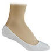

The WIPOS Incident
Run #1029, December 19, 2005
Hare: Oozing SD
Location: Attleboro, MA.
Weather: 20’s, snowy and icy.
Present: Amish It Head, Basket, Bondo, Cumunder Pubic Saw-her-squat, Dr. WHO, Dry Foot Fairy, Great at Giving Head, Just Bob, Trail Hoover, WIPOS, and Ben.
The Run:
Well, if I hadn’t seen it for myself, I wouldn’t have believed it. Yet, it actually happened, or so they say. WIPOS. Completely submerged in icy cold water – rather, nearly completely submerged. He managed to keep the only part of his body that was NOT covered in WIPOS-gear out of the water. Most believed that it was WIPOS proving to the rest that his WIPOS-gear could withstand all but the harshest, Antartic, March-of-the-Penguins weather. Only a few skeptics, like myself, believed that it was WIPOS accidentially falling into the water. Yet, I was not there to see it for myself. Thus, truth and myth will forever be woven into the grey areas of our memories. Beer might have had something to do with that too.
After the ad-hoc WIPOS-gear proof-of-concept trial, I managed to catch the pack, at the ' corner of Tiffany St & West St, heading westward toward Orrs Pond. Catching them was not difficult, for Basket was leading. In fact, I didn’t catch them, rather they caught me! What would you expect following Basket? Nevertheless, Amish forged ahead trying to follow the marks left by the hare. Cumunder followed. And Just Bob, well, who knows what he was doing. Actually, WHO didn’t know. Neither did Bondo. But then again, what does Bondo really know? Yes, that was a rhetorical question.
Yadda, Yadda, Yadda....
The WIPOS incident made everyone sketchy about crossing the frozen-over fingers of Oors Pond, except for those who missed the WIPOS incident (moi). Following the hare, I managed to get to the beer check first (last one to arrive, first to the beer check… Brilliant!), because I was the only one brave (S-T-U-P-I-D) enough to cross the ice-ed over pond. After all, the arrows pointed the way. Others weren’t so observant, except for Dr. WHO and Amish, who joined us shortly.
So Oozing, Dr. WHO, Amish, and I watched others circumvent the pond, and being the fool-hearted ones we were, we crossed the pond when the others neared, and called them over. They started around the pond again, and when they got close, we mosied across the ice to the other side again. This happened about a half-dozen times before the wankers figured out what we were up to, and crossed the ice to the beer.
Bondo was still missing, so all were happy with overwhelming joy, song, beer, and Just Bob. So when Bondo neared, the pack crossed the ice again to the other side. This time, Bondo wouldn’t cross. And for good reason! His BMI (Bondo-brew Mass Index) would surely mean one step would put too much pressure on the ice and he would surely fall in. Just Bob wanted to show Bondo that it wasn’t that bad, and he moved into the middle of the pond, with his beer, and sat down drinking by himself. It was an impressive demonstration, but he forgot to pull his pants down prior to sitting on the ice, like a true hasher would.
After the beer check, the pack wandered back to the cars on Westbrook Lane and wandered to the opposite pond’s ice for the circle. Comments included, “pathetic trail”, “pathetic trail”, and “pathetic trail”. On the positive side there was Bondo, isolated by the ice, keeping everyone else safe (which surely Cumunder appreciated), and, of course, the WIPOS incident. Great at Giving Head was impressed by this new wintery experience for him. And Trail Hoover was underwhelmed by this old wintery experince for her. Nevertheless, the mathematical total somehow equaled +0.69! Hashit went to Oozing for setting such a pathetic trail. Not even Basket could earn such honors. On-on-on was at Weathervanes, and that’s all I’ve got to say about that.
On On

Dry Foot Fairy